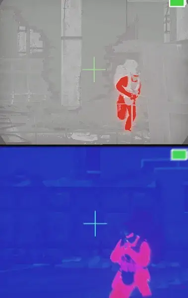
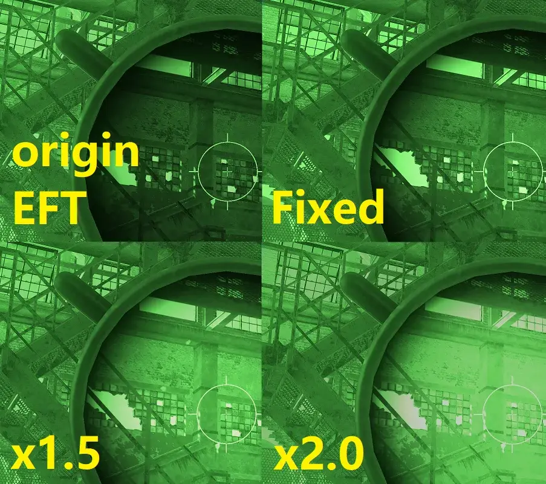
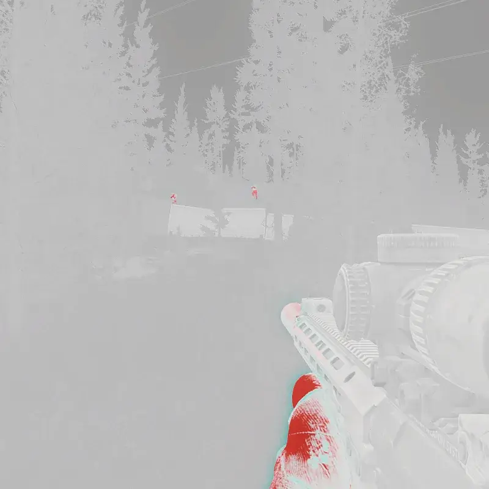
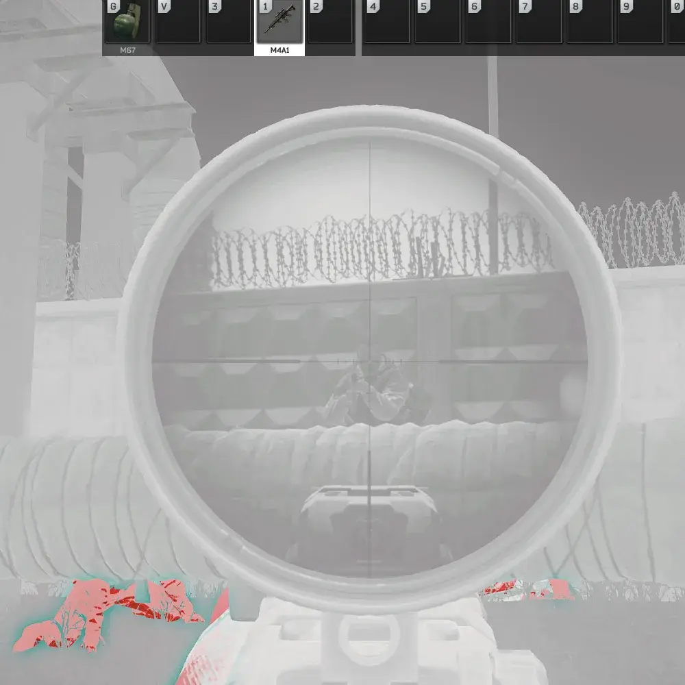

Better Thermal & Night Vision
- Downloads
- 23,151
- Favourites
- 55
- Mod lists
- 80
Make Thermals & NV Great Again
Toggle anything in F12 menu
Remove limits for Thermal Scopes & T7
- All limiting effects are disabled by default
Pixelation
FPS Limit
Scanline / Glitch
Noise
Motion Blur
Distant Blur
Edge Aberration
Customize Thermal Scopes
- Visible cutoff distance: 100–2000 m
- Depth Fade (Visibility on far distance)
- Custom Thermal color (Brightness / ColorDiff / ColorShift. Need BepInEx Advanced settings checked. Better disable custom color if you used more than one thermal scopes)
Customize T-7 Thermal
- Compatible optic scopes (mainly for 1x scopes. No heat color for zoomable scopes due to double rendering method in THE CITY)
- Depth Fade (Visibility distance)
- Remove surrounding black screen mask (Fullscreen)
- Toggle Red-Hot heat mode
- Edit Red-Hot color (Brightness / ColorDiff / ColorShift. Need BepInEx Advanced settings checked)
Night Vision
- Disable Noise
- Remove surrounding black screen mask (Fullscreen)
- Increase the vision brightness of scopes while using helmet-NV (configurable)
Compatiblity & Other
- Conflict with Amands Graphic’s NV functions, try disable NV things in this or Amands’ mod. Turn noise intensity down to zero in Amands fix NV problem.
- T7 & NV settings work on thermal & NV view such as ThermalMode in CWX-MegaMod
- This mod overwrite settings from Realistic Thermal or other similar mods.
- Might conflict to Borkel’s real NV or other mod. Test on your own, if some is error (like screen mask) try to enable the selections to recover vanilla things in F12 menu of this mod, and see if it’s okay.
- To increase zero distance of thermal scopes, use SVM mod and add these to “Default IIC” on last page “Advance feature”:
5a1eaa87fcdbcb001865f75e:CalibrationDistances:0:[50,100,150,200,250,300]
6478641c19d732620e045e17:CalibrationDistances:0:[50,100,150,200,250,300]
5d1b5e94d7ad1a2b865a96b0:CalibrationDistances:0:[50,100,150,200,250,300,350,400]
63fc44e2429a8a166c7f61e6:CalibrationDistances:0:[50,100,150,200,250,300,350,400]
Function Preview image
Thermal scopes

Brightness fix of zoomable scope when using NV

White-Red hot mode T7 with advanced setting Colordiff=0.25

Allowed scopes, zoomable scopes won’t have thermal color, 1x scopes can (as the title figure of this mod)

How to install or uninstall
Download the ZIP, open and drag the BepInEx folder to your SPT main folder
To uninstall, just remove the folder BepInEx/plugins/BetterThermalNightVision
Acknowledge
Idea credits to GOOKLE’s better thermal and many other similar mods.
T7 compatible optic scopes credits to woohoofly’s client thermal mods.
Version
1.3.2
Can save custom color of thermal scopes forever. Add a reset button to recover default values by the first scope mode used in raid.
Version
1.3.1
Fix scope brightness didn’t work when entering hideout before raid.
Version
1.3.0
Add a fix for brightness of zoomable scopes vision while using helmet NV.
The brightness can be customized.
(check Description page to see image)
Version
1.2.3
Fix Night Vision noise disabler.
Version
1.2.2
Fix thermal scope view distance applied to normal scopes.
Version
1.2.1
Fixed when using >1 thermal scopes, the thermal values of first scope will cover the others.
Version
1.2.0
T7 can use optic scope (1x scopes has thermal color, while zoomable scopes can’t)
Add Red-Hot mode T7.
Can change T7 view distance.
Add advanced settings for customize thermal color shift / bright / contrast.
Version
1.1.0
For SPT 4.0.x